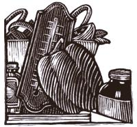

21 Ways To Save Energy $$
April/May 1994
Energy Tips
All-season tips to help you eliminate energy waste in your home.
Taming the Fridge
1 You may be spending more than you need to by running your refrigerator at a cooler setting than is required. Put an ordinary household thermometer in the refrigerator for a half hour or so. If it registers colder than 40°F, change to a warmer setting and check it again.
2 While you're at it, check the door gaskets all the way around by closing the door on a dollar bill. If the bill slips out easily at any place, you're wasting money. You may be able to correct the problem by putting paper strips or thin cardboard behind the offending gasket, or by adjusting the latch. If those don't do the trick, a new gasket is a good investment and not difficult to install.
3 That frost-free feature sure is a convenience, but a standard refrigerator defrosted by hand a few times a year will use less electricity.
4 When the kids grow up and have nests of their own, that big refrigerator you once needed may become a liability. A refrigerator operates most efficiently when it's full, and chances are you don't use its capacity. Consider giving one of the kids the big box and buying a smaller model.
Summer's Almost Here...
5 During the dog days, keep an eye out for extra lights burning in the house. A typical incandescent bulb generates 95% of its energy as heat, not light.
6 Don't preheat the oven. In most cases it's unnecessary, and if it's absolutely necessary don't preheat for more than 10 minutes.
7 Cook with the lids on your pots and pans. Your food will cook faster and your stove will produce less heat.
8 Use a Crockpot instead of the oven or range. It uses heat efficiently and costs less. You'll be amazed at the variety of dishes you can make.
9 Don't use the self-clean feature of your oven for the whole summer. Cleaning up spills as they happen is far better than contributing all that heat to the house.
10 Shower with the window open. Let the great outdoors have all that humidity.
11 A large window fan uses one-fourth as much energy as an air conditioner. It will go a long way toward keeping you cool on all but the hottest days. Large fans are best placed in the attic, where they will push the hottest air out of the house and draw cooler air from the downstairs.
12 If operating an conditioner, cleaning (or replacing, if necessary) the air filter once a month will reduce the load on the compressor and save money. Also, place the air conditioner on the shady side of the house-generally the north side.
13 Be sure to close the outside air control when operating the air conditioner so that the compressor is cooling only room air.
14 Setting the conditioner's thermostat to lower than 78°F is a waste of electricity.

Cold Water for Your Laundry?
15 Only clothes that are very greasy need water as warm as 80°F to get clean. Most people hugely overcompensate by using water as hot as 120°F. Use the cold setting for ordinary washing, the warm for very dirty clothes, the hot not at all. Your wash-and-wear clothes made with synthetic fibers will be just as clean and considerably less wrinkled if you use cold water for washing.
16 By the way, don't try to compensate for extra dirty clothes by adding more detergent to the wash. It won't make your clothes any cleaner and will hamper the efficient functioning of the machine. If some clothes need extra attention, presoak them.
Stretching a Tank of Gas
17 Replace the air filter. A clogged air filter leaves your engine gasping for breath and means you're probably running with a "rich" mixture, that is, more gas and less air.
18 Change the oil regularly. Dirty oil will cause more engine friction and reduce efficiency.
19 If your fan belt is too tight, the engine is working too hard and wasting gas. The belt should give a little to finger pressure when the engine is off. If it doesn't, the adjustment is easy to make with a wrench.
20 Badly worn spark plugs can cost you as much as 2 mi/gal. Change them with every tune-up.
21 You've heard it before but SLOW DOWN! A car that runs at 40 mi/gal at 40 miles per hour will get as little as 25 mi/gal at 70. Tailgating is also an inefficient way to drive your car. You'll be alternatively breaking and pumping gas as you respond to the forward driver's perceptions of the road ...not yours. Last and most important, it's a far less satisfying and far more dangerous way to drive.
Adapted from 547 Tips For Saving Energy In Your Home (Storey Publishing) by Roger Albright. Copyright ©1993 by Roger Albright.
|
 |
|
|
|
|
|
|